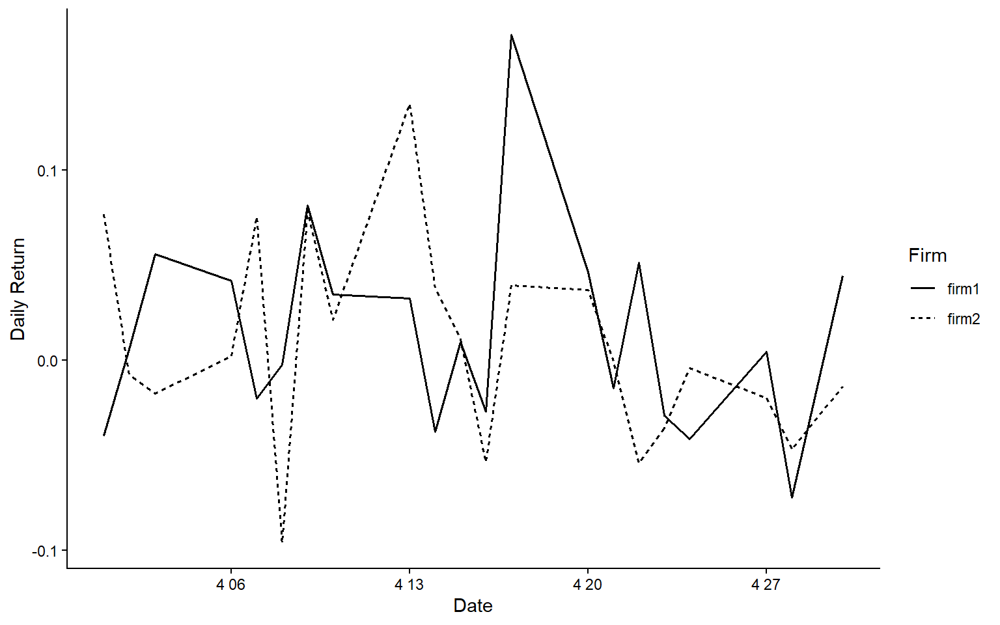
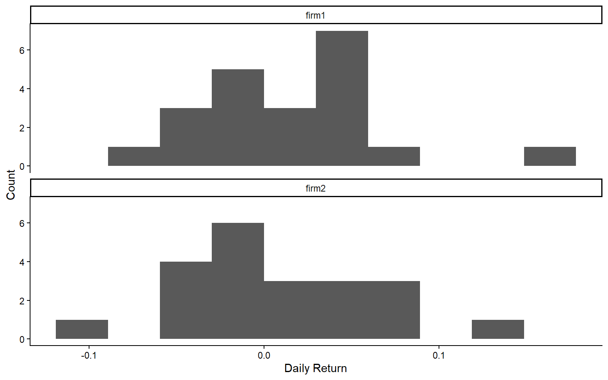
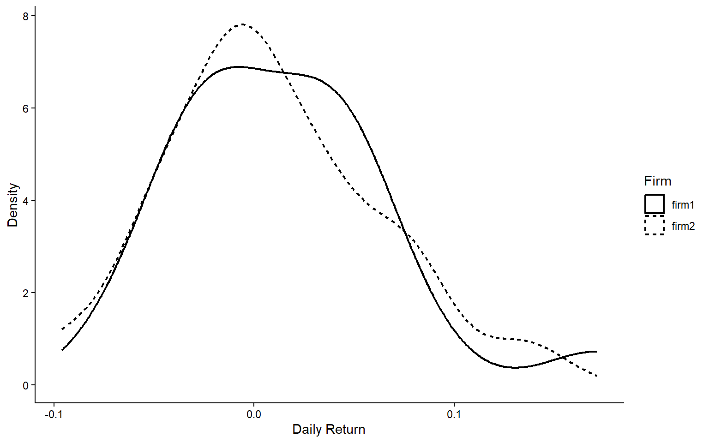
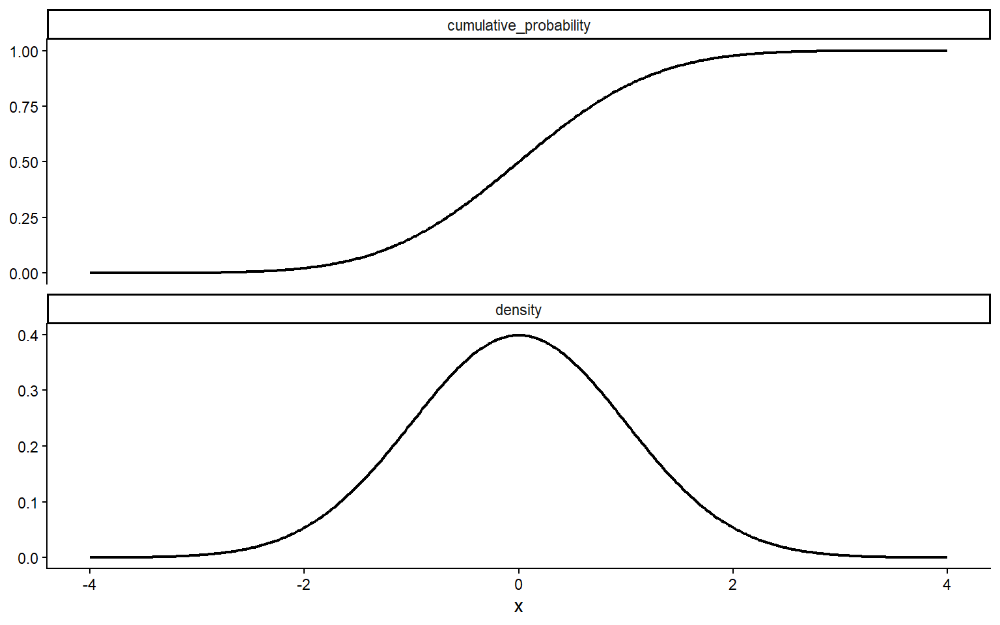
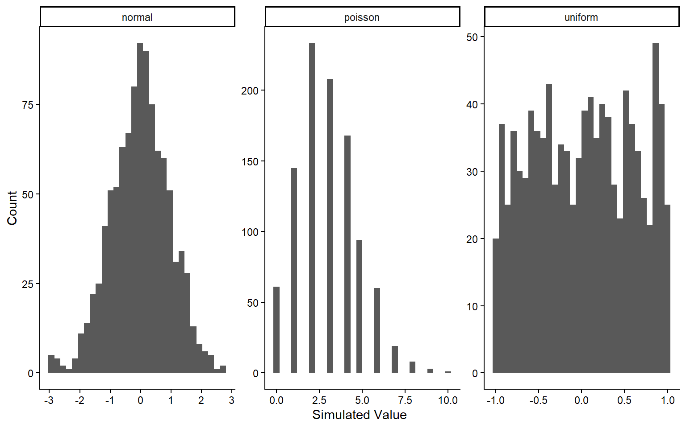
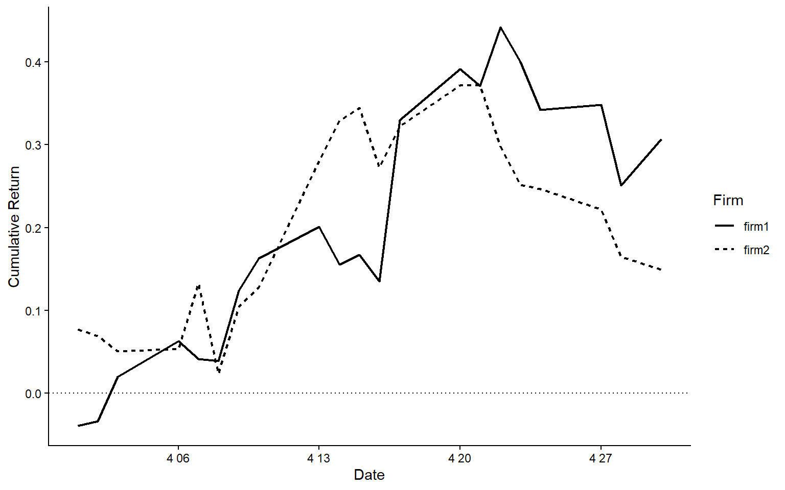

suppressPackageStartupMessages({
library(tidyverse)
library(ggthemes)
library(QuantLib)
library(GaussQuant)
})第1章 Rによるデータ分析の基礎
本章では、Rによるデータ分析に必要な基本操作を、Base Rからtidyverseへ段階的に学ぶ。前半では、オブジェクト、ベクトル、行列、リスト、データフレーム、関数、条件判定、記述統計および確率分布を扱う。後半では、dplyr、stringr、tidyr、purrr、ggplot2を用いて、データの読込み、整形、集計、反復処理、可視化を一つの流れとして組み立てる。
Base Rの項目構成は、Positが公開しているBase R Cheatsheetを参考にしている。本章のコードでは、反復処理に明示的なループを使わず、ベクトル化またはpurrr::map()系関数を用いる。また、パイプ演算子はすべて|>に統一する。
1.1 使用するパッケージ
本章ではtidyverseを使用する。tidyverseには、データ操作のdplyr、文字列処理のstringr、データ整形のtidyr、反復処理のpurrr、可視化のggplot2などが含まれる。
パッケージが未導入の場合は、RStudioのConsoleで一度だけ次を実行する。
install.packages("tidyverse")1.2 Rの基本操作
オブジェクトと代入
Rでは、計算結果やデータをオブジェクトとして保存する。代入には<-を用いる。
risk_free_rate <- 0.01
future_cash_flow <- 100
present_value <- future_cash_flow / (1 + risk_free_rate)
present_value[1] 99.0099オブジェクト名には、内容が分かる英単語を用いる。本書では複数の単語をアンダースコアで結ぶsnake_caseを基本とする。
四則演算と代表的な数学関数
2 + 3[1] 510 - 4[1] 66 * 7[1] 42100 / 4[1] 252^5[1] 32sqrt(16)[1] 4log(exp(1))[1] 1abs(-3)[1] 3round(pi, digits = 3)[1] 3.142signif(pi, digits = 4)[1] 3.142オブジェクトの型と構造
numeric_value <- 10.5
integer_value <- 10L
character_value <- "Finance"
logical_value <- TRUE
class(numeric_value)[1] "numeric"class(integer_value)[1] "integer"class(character_value)[1] "character"class(logical_value)[1] "logical"typeof(numeric_value)[1] "double"str(numeric_value) num 10.5欠損値
欠損値はNAで表す。欠損値の有無はis.na()で確認する。
returns_with_na <- c(0.02, NA, -0.01, 0.03)
is.na(returns_with_na)[1] FALSE TRUE FALSE FALSEsum(is.na(returns_with_na))[1] 1mean(returns_with_na, na.rm = TRUE)[1] 0.013333331.3 ベクトル
ベクトルの作成
interest_rates <- c(0.01, 0.015, 0.02)
year_sequence <- 1:5
fine_grid <- seq(from = 0, to = 1, by = 0.25)
repeated_values <- rep(100, times = 5)
interest_rates[1] 0.010 0.015 0.020year_sequence[1] 1 2 3 4 5fine_grid[1] 0.00 0.25 0.50 0.75 1.00repeated_values[1] 100 100 100 100 100ベクトルの要素
Rの添字は1から始まる。
interest_rates[1][1] 0.01interest_rates[2:3][1] 0.015 0.020interest_rates[-1][1] 0.015 0.020interest_rates[interest_rates >= 0.015][1] 0.015 0.020名前付きベクトル
portfolio_weights <- c(stock = 0.6, bond = 0.3, cash = 0.1)
portfolio_weightsstock bond cash
0.6 0.3 0.1 portfolio_weights["bond"]bond
0.3 sum(portfolio_weights)[1] 1ベクトル化
Rでは、多くの計算をベクトル全体に一度に適用できる。
discount_rates <- seq(0.01, 0.05, by = 0.01)
cash_flow <- 100
present_values <- cash_flow / (1 + discount_rates)
tibble(discount_rates, present_values)# A tibble: 5 × 2
discount_rates present_values
<dbl> <dbl>
1 0.01 99.0
2 0.02 98.0
3 0.03 97.1
4 0.04 96.2
5 0.05 95.21.4 行列、リスト、データフレーム
行列
return_matrix <- matrix(
c(0.01, 0.02, -0.01, 0.03, 0.00, 0.01),
nrow = 3,
ncol = 2,
byrow = TRUE
)
colnames(return_matrix) <- c("stock_a", "stock_b")
rownames(return_matrix) <- c("month_1", "month_2", "month_3")
return_matrix stock_a stock_b
month_1 0.01 0.02
month_2 -0.01 0.03
month_3 0.00 0.01return_matrix[, "stock_a"]month_1 month_2 month_3
0.01 -0.01 0.00 colMeans(return_matrix)stock_a stock_b
0.00 0.02 リスト
リストには、型や長さの異なるオブジェクトをまとめて保存できる。
analysis_result <- list(
model_name = "simple return model",
coefficients = c(alpha = 0.001, beta = 1.05),
observations = 60L,
converged = TRUE
)
analysis_result$model_name[1] "simple return model"analysis_result$coefficientsalpha beta
0.001 1.050 analysis_result[["observations"]][1] 60データフレーム
firm_data_base <- data.frame(
firm_id = 1:3,
firm_name = c("Firm A", "Firm B", "Firm C"),
roe = c(0.08, 0.12, 0.15)
)
firm_data_base firm_id firm_name roe
1 1 Firm A 0.08
2 2 Firm B 0.12
3 3 Firm C 0.15str(firm_data_base)'data.frame': 3 obs. of 3 variables:
$ firm_id : int 1 2 3
$ firm_name: chr "Firm A" "Firm B" "Firm C"
$ roe : num 0.08 0.12 0.15tidyverseでは、データフレームを拡張したtibbleを用いる。
firm_data <- tibble(
firm_id = 1:3,
firm_name = c("Firm A", "Firm B", "Firm C"),
roe = c(0.08, 0.12, 0.15)
)
firm_data# A tibble: 3 × 3
firm_id firm_name roe
<int> <chr> <dbl>
1 1 Firm A 0.08
2 2 Firm B 0.12
3 3 Firm C 0.15少量のデータを行単位で記述する場合はtribble()が便利である。
project_data <- tribble(
~project, ~initial_cost, ~cash_flow,
"A", 100, 120,
"B", 150, 175,
"C", 200, 215
)
project_data# A tibble: 3 × 3
project initial_cost cash_flow
<chr> <dbl> <dbl>
1 A 100 120
2 B 150 175
3 C 200 2151.5 条件判定と独自関数
条件判定
npv <- 5.2
investment_decision <- if (npv >= 0) {
"投資を実行する"
} else {
"投資を見送る"
}
investment_decision[1] "投資を実行する"ベクトルに対する複数の条件分岐にはcase_when()を用いる。
credit_scores <- tibble(score = c(85, 72, 58, 91))
credit_scores |>
mutate(
rating = case_when(
score >= 80 ~ "A",
score >= 65 ~ "B",
TRUE ~ "C"
)
)# A tibble: 4 × 2
score rating
<dbl> <chr>
1 85 A
2 72 B
3 58 C
4 91 A 独自関数
calculate_present_value <- function(cash_flow, discount_rate, years = 1) {
cash_flow / (1 + discount_rate)^years
}
calculate_present_value(cash_flow = 100, discount_rate = 0.02, years = 3)[1] 94.23223関数はベクトルをそのまま受け取れるように設計すると再利用しやすい。
calculate_present_value(
cash_flow = c(100, 100, 100),
discount_rate = 0.02,
years = 1:3
)[1] 98.03922 96.11688 94.232231.6 記述統計
代表値と散らばり
sample_returns <- c(0.01, 0.03, -0.02, 0.00, 0.04, 0.02)
mean(sample_returns)[1] 0.01333333median(sample_returns)[1] 0.015min(sample_returns)[1] -0.02max(sample_returns)[1] 0.04range(sample_returns)[1] -0.02 0.04var(sample_returns)[1] 0.0004666667sd(sample_returns)[1] 0.02160247quantile(sample_returns) 0% 25% 50% 75% 100%
-0.0200 0.0025 0.0150 0.0275 0.0400 共分散と相関
stock_a <- c(0.01, 0.03, -0.02, 0.02, 0.04)
stock_b <- c(0.00, 0.02, -0.01, 0.01, 0.03)
cov(stock_a, stock_b)[1] 0.00035cor(stock_a, stock_b)[1] 0.9615239順位
firm_returns <- c(0.08, 0.12, -0.03, 0.05)
rank(firm_returns)[1] 3 4 1 2rank(-firm_returns)[1] 2 1 4 3order(firm_returns, decreasing = TRUE)[1] 2 1 4 31.7 確率分布
Rの確率分布関数には共通した命名規則がある。
| 接頭辞 | 内容 |
|---|---|
r |
乱数を生成する |
d |
確率密度または確率質量を求める |
p |
累積確率を求める |
q |
累積確率に対応する分位点を求める |
一様分布
set.seed(1234)
uniform_random <- runif(n = 10, min = 0, max = 1)
uniform_random [1] 0.113703411 0.622299405 0.609274733 0.623379442 0.860915384 0.640310605
[7] 0.009495756 0.232550506 0.666083758 0.514251141dunif(0.5, min = 0, max = 1)[1] 1punif(0.5, min = 0, max = 1)[1] 0.5qunif(0.95, min = 0, max = 1)[1] 0.95正規分布
set.seed(1234)
normal_random <- rnorm(n = 10, mean = 0, sd = 1)
normal_random [1] -1.2070657 0.2774292 1.0844412 -2.3456977 0.4291247 0.5060559
[7] -0.5747400 -0.5466319 -0.5644520 -0.8900378dnorm(0, mean = 0, sd = 1)[1] 0.3989423pnorm(1.96, mean = 0, sd = 1)[1] 0.9750021qnorm(0.975, mean = 0, sd = 1)[1] 1.959964dnorm()は正規分布の密度、pnorm()は指定した値以下となる確率、qnorm()は指定した累積確率に対応する分位点を返す。
probability_below <- pnorm(-0.02, mean = 0.01, sd = 0.03)
value_at_risk_95 <- qnorm(0.05, mean = 0.01, sd = 0.03)
probability_below[1] 0.1586553value_at_risk_95[1] -0.03934561二項分布
set.seed(1234)
binomial_random <- rbinom(n = 10, size = 20, prob = 0.6)
binomial_random [1] 15 11 11 11 10 11 17 14 11 12dbinom(12, size = 20, prob = 0.6)[1] 0.1797058pbinom(12, size = 20, prob = 0.6)[1] 0.5841071qbinom(0.95, size = 20, prob = 0.6)[1] 16ポアソン分布
set.seed(1234)
poisson_random <- rpois(n = 10, lambda = 3)
poisson_random [1] 1 3 3 3 5 3 0 2 4 3dpois(2, lambda = 3)[1] 0.2240418ppois(2, lambda = 3)[1] 0.4231901qpois(0.95, lambda = 3)[1] 6分布関数の比較
distribution_functions <- tribble(
~distribution, ~random_function, ~density_function, ~cumulative_function, ~quantile_function,
"一様分布", "runif()", "dunif()", "punif()", "qunif()",
"正規分布", "rnorm()", "dnorm()", "pnorm()", "qnorm()",
"二項分布", "rbinom()", "dbinom()", "pbinom()", "qbinom()",
"ポアソン分布","rpois()", "dpois()", "ppois()", "qpois()"
)
distribution_functions# A tibble: 4 × 5
distribution random_function density_function cumulative_function
<chr> <chr> <chr> <chr>
1 一様分布 runif() dunif() punif()
2 正規分布 rnorm() dnorm() pnorm()
3 二項分布 rbinom() dbinom() pbinom()
4 ポアソン分布 rpois() dpois() ppois()
# ℹ 1 more variable: quantile_function <chr>1.8 プロジェクト内のデータを読み込む
本書で使用するデータは、プロジェクトルートのsimulation_dataディレクトリに置かれている。絶対パスをコードへ直接書くと、プロジェクトを別の場所へ移したときに動かなくなる。そのため、現在の作業ディレクトリと_quarto.ymlを利用してプロジェクトルートを確認する。
project_candidates <- unique(c(
Sys.getenv("QUARTO_PROJECT_DIR"),
getwd(),
dirname(getwd())
))
project_candidates <- project_candidates[nzchar(project_candidates)]
project_matches <- project_candidates[
file.exists(file.path(project_candidates, "_quarto.yml"))
]
if (length(project_matches) == 0) {
stop("LagrangeFinanceのプロジェクトルートを確認できません。")
}
project_dir <- normalizePath(project_matches[1], winslash = "/", mustWork = TRUE)
data_dir <- file.path(project_dir, "simulation_data")
if (!dir.exists(data_dir)) {
stop("simulation_dataディレクトリが見つかりません: ", data_dir)
}
project_dir[1] "C:/AnalyticFin/Projects/LagrangeFinance"data_dir[1] "C:/AnalyticFin/Projects/LagrangeFinance/simulation_data"simulation_data以下のCSVファイルを再帰的に確認する。
csv_paths <- list.files(
path = data_dir,
pattern = "\\.csv$",
full.names = TRUE,
recursive = TRUE
)
normalized_data_dir <- normalizePath(data_dir, winslash = "/", mustWork = TRUE)
normalized_csv_paths <- normalizePath(csv_paths, winslash = "/", mustWork = FALSE)
csv_catalog <- tibble(
file_name = basename(csv_paths),
relative_path = substring(
normalized_csv_paths,
first = nchar(normalized_data_dir) + 2
)
) |>
arrange(relative_path)
csv_catalog# A tibble: 27 × 2
file_name relative_path
<chr> <chr>
1 ch03_daily_stock_return.csv ch03_daily_stock_return.csv
2 ch03_output.csv ch03_output.csv
3 ch04_financial_data.csv ch04_financial_data.csv
4 ch04_output.csv ch04_output.csv
5 ch05_accounting_standard.csv ch05_accounting_standard.csv
6 ch05_earnings_management.csv ch05_earnings_management.csv
7 ch05_messy_stock_return.csv ch05_messy_stock_return.csv
8 ch05_output1.csv ch05_output1.csv
9 ch05_output2.csv ch05_output2.csv
10 ch05_stock_data.csv ch05_stock_data.csv
# ℹ 17 more rows第1章では、従来から使用しているch03_daily_stock_return.csvを読み込む。ファイルがsimulation_data内のサブディレクトリに置かれていても検索できる。
daily_return_candidates <- csv_paths[
basename(csv_paths) == "ch03_daily_stock_return.csv"
]
if (length(daily_return_candidates) == 0) {
stop("ch03_daily_stock_return.csvがsimulation_data以下に見つかりません。")
}
daily_return_path <- daily_return_candidates[1]
daily_stock_return <- readr::read_csv(
daily_return_path,
show_col_types = FALSE
)
required_columns <- c("date", "firm1", "firm2")
missing_columns <- setdiff(required_columns, names(daily_stock_return))
if (length(missing_columns) > 0) {
stop(
"必要な列が不足しています: ",
paste(missing_columns, collapse = ", ")
)
}
daily_stock_return <- daily_stock_return |>
mutate(date = as.Date(date))
daily_stock_return# A tibble: 21 × 3
date firm1 firm2
<date> <dbl> <dbl>
1 2020-04-01 -0.0395 0.0770
2 2020-04-02 0.00598 -0.00725
3 2020-04-03 0.0558 -0.0173
4 2020-04-06 0.0419 0.00217
5 2020-04-07 -0.0202 0.0755
6 2020-04-08 -0.00229 -0.0962
7 2020-04-09 0.0817 0.0788
8 2020-04-10 0.0346 0.0215
9 2020-04-13 0.0326 0.135
10 2020-04-14 -0.0377 0.0380
# ℹ 11 more rowsデータの構造を確認する
glimpse(daily_stock_return)Rows: 21
Columns: 3
$ date <date> 2020-04-01, 2020-04-02, 2020-04-03, 2020-04-06, 2020-04-07, 202…
$ firm1 <dbl> -0.039482142, 0.005978689, 0.055786605, 0.041934669, -0.02019279…
$ firm2 <dbl> 0.0769625974, -0.0072488484, -0.0173040800, 0.0021689573, 0.0755…summary(daily_stock_return) date firm1 firm2
Min. :2020-04-01 Min. :-0.072071 Min. :-0.0962117
1st Qu.:2020-04-08 1st Qu.:-0.027029 1st Qu.:-0.0196147
Median :2020-04-15 Median : 0.005979 Median :-0.0003056
Mean :2020-04-15 Mean : 0.014161 Mean : 0.0080253
3rd Qu.:2020-04-22 3rd Qu.: 0.044812 3rd Qu.: 0.0379793
Max. :2020-04-30 Max. : 0.171297 Max. : 0.1352008 nrow(daily_stock_return)[1] 21ncol(daily_stock_return)[1] 3names(daily_stock_return)[1] "date" "firm1" "firm2"1.9 dplyrによるデータ操作
列を選ぶ
daily_stock_return |>
select(date, firm1)# A tibble: 21 × 2
date firm1
<date> <dbl>
1 2020-04-01 -0.0395
2 2020-04-02 0.00598
3 2020-04-03 0.0558
4 2020-04-06 0.0419
5 2020-04-07 -0.0202
6 2020-04-08 -0.00229
7 2020-04-09 0.0817
8 2020-04-10 0.0346
9 2020-04-13 0.0326
10 2020-04-14 -0.0377
# ℹ 11 more rows行を抽出する
daily_stock_return |>
filter(firm1 > 0)# A tibble: 12 × 3
date firm1 firm2
<date> <dbl> <dbl>
1 2020-04-02 0.00598 -0.00725
2 2020-04-03 0.0558 -0.0173
3 2020-04-06 0.0419 0.00217
4 2020-04-09 0.0817 0.0788
5 2020-04-10 0.0346 0.0215
6 2020-04-13 0.0326 0.135
7 2020-04-15 0.00988 0.0114
8 2020-04-17 0.171 0.0395
9 2020-04-20 0.0463 0.0373
10 2020-04-22 0.0515 -0.0538
11 2020-04-27 0.00454 -0.0196
12 2020-04-30 0.0448 -0.0134 複数の条件を同時に指定できる。
daily_stock_return |>
filter(firm1 > 0, firm2 > 0)# A tibble: 7 × 3
date firm1 firm2
<date> <dbl> <dbl>
1 2020-04-06 0.0419 0.00217
2 2020-04-09 0.0817 0.0788
3 2020-04-10 0.0346 0.0215
4 2020-04-13 0.0326 0.135
5 2020-04-15 0.00988 0.0114
6 2020-04-17 0.171 0.0395
7 2020-04-20 0.0463 0.0373 列を追加する
return_data <- daily_stock_return |>
mutate(
spread = firm1 - firm2,
firm1_gross_return = 1 + firm1,
firm2_gross_return = 1 + firm2,
market_direction = case_when(
firm1 > 0 & firm2 > 0 ~ "both_positive",
firm1 < 0 & firm2 < 0 ~ "both_negative",
TRUE ~ "mixed"
)
)
return_data# A tibble: 21 × 7
date firm1 firm2 spread firm1_gross_return firm2_gross_return
<date> <dbl> <dbl> <dbl> <dbl> <dbl>
1 2020-04-01 -0.0395 0.0770 -0.116 0.961 1.08
2 2020-04-02 0.00598 -0.00725 0.0132 1.01 0.993
3 2020-04-03 0.0558 -0.0173 0.0731 1.06 0.983
4 2020-04-06 0.0419 0.00217 0.0398 1.04 1.00
5 2020-04-07 -0.0202 0.0755 -0.0957 0.980 1.08
6 2020-04-08 -0.00229 -0.0962 0.0939 0.998 0.904
7 2020-04-09 0.0817 0.0788 0.00286 1.08 1.08
8 2020-04-10 0.0346 0.0215 0.0130 1.03 1.02
9 2020-04-13 0.0326 0.135 -0.103 1.03 1.14
10 2020-04-14 -0.0377 0.0380 -0.0756 0.962 1.04
# ℹ 11 more rows
# ℹ 1 more variable: market_direction <chr>並べ替える
return_data |>
arrange(firm1)# A tibble: 21 × 7
date firm1 firm2 spread firm1_gross_return firm2_gross_return
<date> <dbl> <dbl> <dbl> <dbl> <dbl>
1 2020-04-28 -0.0721 -0.0469 -0.0252 0.928 0.953
2 2020-04-24 -0.0414 -0.00411 -0.0373 0.959 0.996
3 2020-04-01 -0.0395 0.0770 -0.116 0.961 1.08
4 2020-04-14 -0.0377 0.0380 -0.0756 0.962 1.04
5 2020-04-23 -0.0289 -0.0355 0.00661 0.971 0.965
6 2020-04-16 -0.0270 -0.0535 0.0265 0.973 0.947
7 2020-04-07 -0.0202 0.0755 -0.0957 0.980 1.08
8 2020-04-21 -0.0146 -0.000306 -0.0143 0.985 1.000
9 2020-04-08 -0.00229 -0.0962 0.0939 0.998 0.904
10 2020-04-27 0.00454 -0.0196 0.0242 1.00 0.980
# ℹ 11 more rows
# ℹ 1 more variable: market_direction <chr>return_data |>
arrange(desc(firm1))# A tibble: 21 × 7
date firm1 firm2 spread firm1_gross_return firm2_gross_return
<date> <dbl> <dbl> <dbl> <dbl> <dbl>
1 2020-04-17 0.171 0.0395 0.132 1.17 1.04
2 2020-04-09 0.0817 0.0788 0.00286 1.08 1.08
3 2020-04-03 0.0558 -0.0173 0.0731 1.06 0.983
4 2020-04-22 0.0515 -0.0538 0.105 1.05 0.946
5 2020-04-20 0.0463 0.0373 0.00905 1.05 1.04
6 2020-04-30 0.0448 -0.0134 0.0582 1.04 0.987
7 2020-04-06 0.0419 0.00217 0.0398 1.04 1.00
8 2020-04-10 0.0346 0.0215 0.0130 1.03 1.02
9 2020-04-13 0.0326 0.135 -0.103 1.03 1.14
10 2020-04-15 0.00988 0.0114 -0.00155 1.01 1.01
# ℹ 11 more rows
# ℹ 1 more variable: market_direction <chr>要約する
return_data |>
summarise(
observations = n(),
mean_firm1 = mean(firm1),
sd_firm1 = sd(firm1),
mean_firm2 = mean(firm2),
sd_firm2 = sd(firm2),
correlation = cor(firm1, firm2)
)# A tibble: 1 × 6
observations mean_firm1 sd_firm1 mean_firm2 sd_firm2 correlation
<int> <dbl> <dbl> <dbl> <dbl> <dbl>
1 21 0.0142 0.0538 0.00803 0.0544 0.233グループごとに集計する
return_data |>
group_by(market_direction) |>
summarise(
observations = n(),
mean_firm1 = mean(firm1),
mean_firm2 = mean(firm2),
.groups = "drop"
) |>
arrange(desc(observations))# A tibble: 3 × 4
market_direction observations mean_firm1 mean_firm2
<chr> <int> <dbl> <dbl>
1 mixed 8 0.00816 0.00989
2 both_positive 7 0.0598 0.0466
3 both_negative 6 -0.0310 -0.0394 件数を数える
return_data |>
count(market_direction, sort = TRUE)# A tibble: 3 × 2
market_direction n
<chr> <int>
1 mixed 8
2 both_positive 7
3 both_negative 6データを結合する
firm_master <- tribble(
~firm, ~firm_name, ~industry,
"firm1", "Firm A", "Machinery",
"firm2", "Firm B", "Chemicals"
)
return_summary <- return_data |>
summarise(
firm1 = mean(firm1),
firm2 = mean(firm2)
) |>
pivot_longer(
cols = everything(),
names_to = "firm",
values_to = "mean_return"
)
return_summary |>
left_join(firm_master, by = "firm")# A tibble: 2 × 4
firm mean_return firm_name industry
<chr> <dbl> <chr> <chr>
1 firm1 0.0142 Firm A Machinery
2 firm2 0.00803 Firm B Chemicals1.10 stringrによる文字列処理
文字列処理では、関数名がstr_で始まるstringrを使用する。
company_names <- tibble(
raw_name = c(
" Alpha Holdings Co., Ltd. ",
"Beta Financial Group",
"Gamma Industries"
)
)
company_names <- company_names |>
mutate(
clean_name = str_squish(raw_name),
lower_name = str_to_lower(clean_name),
name_length = str_length(clean_name),
contains_group = str_detect(clean_name, regex("group", ignore_case = TRUE)),
first_word = str_extract(clean_name, "^[A-Za-z]+")
)
company_names# A tibble: 3 × 6
raw_name clean_name lower_name name_length contains_group first_word
<chr> <chr> <chr> <int> <lgl> <chr>
1 " Alpha Holdings… Alpha Hol… alpha hol… 24 FALSE Alpha
2 "Beta Financial G… Beta Fina… beta fina… 20 TRUE Beta
3 "Gamma Industries" Gamma Ind… gamma ind… 16 FALSE Gamma 置換と結合
company_names |>
mutate(
short_name = str_remove(clean_name, regex(" co\\., ltd\\.$", ignore_case = TRUE)),
display_name = str_c(first_word, " / ", name_length, " characters")
) |>
select(clean_name, short_name, display_name)# A tibble: 3 × 3
clean_name short_name display_name
<chr> <chr> <chr>
1 Alpha Holdings Co., Ltd. Alpha Holdings Alpha / 24 characters
2 Beta Financial Group Beta Financial Group Beta / 20 characters
3 Gamma Industries Gamma Industries Gamma / 16 characters1.11 tidyrによるデータ整形
wide形式からlong形式へ変換する
元のデータでは、firm1とfirm2が別々の列に格納されている。pivot_longer()を使うと、企業名とリターンをそれぞれ一つの列へまとめられる。
return_long <- daily_stock_return |>
pivot_longer(
cols = c(firm1, firm2),
names_to = "firm",
values_to = "return"
)
return_long# A tibble: 42 × 3
date firm return
<date> <chr> <dbl>
1 2020-04-01 firm1 -0.0395
2 2020-04-01 firm2 0.0770
3 2020-04-02 firm1 0.00598
4 2020-04-02 firm2 -0.00725
5 2020-04-03 firm1 0.0558
6 2020-04-03 firm2 -0.0173
7 2020-04-06 firm1 0.0419
8 2020-04-06 firm2 0.00217
9 2020-04-07 firm1 -0.0202
10 2020-04-07 firm2 0.0755
# ℹ 32 more rowslong形式からwide形式へ戻す
return_long |>
pivot_wider(
names_from = firm,
values_from = return
)# A tibble: 21 × 3
date firm1 firm2
<date> <dbl> <dbl>
1 2020-04-01 -0.0395 0.0770
2 2020-04-02 0.00598 -0.00725
3 2020-04-03 0.0558 -0.0173
4 2020-04-06 0.0419 0.00217
5 2020-04-07 -0.0202 0.0755
6 2020-04-08 -0.00229 -0.0962
7 2020-04-09 0.0817 0.0788
8 2020-04-10 0.0346 0.0215
9 2020-04-13 0.0326 0.135
10 2020-04-14 -0.0377 0.0380
# ℹ 11 more rows文字列を複数列へ分ける
security_codes <- tibble(
security_id = c("JP-1001", "JP-1002", "US-2001")
)
security_codes |>
separate_wider_delim(
security_id,
delim = "-",
names = c("country", "code")
)# A tibble: 3 × 2
country code
<chr> <chr>
1 JP 1001
2 JP 1002
3 US 2001 欠損値を処理する
missing_data <- tibble(
firm = c("A", "B", "C"),
return = c(0.02, NA, -0.01)
)
missing_data |>
replace_na(list(return = 0))# A tibble: 3 × 2
firm return
<chr> <dbl>
1 A 0.02
2 B 0
3 C -0.01missing_data |>
drop_na()# A tibble: 2 × 2
firm return
<chr> <dbl>
1 A 0.02
2 C -0.011.12 purrrによる反復処理
map()と型を指定するmap系関数
map()は結果をリストとして返す。数値ベクトルが必要な場合はmap_dbl()を用いる。
discount_rates <- c(0.01, 0.02, 0.03, 0.04)
discount_rates |>
map(\(rate) calculate_present_value(100, rate))[[1]]
[1] 99.0099
[[2]]
[1] 98.03922
[[3]]
[1] 97.08738
[[4]]
[1] 96.15385present_value_table <- tibble(
discount_rate = discount_rates,
present_value = discount_rates |>
map_dbl(\(rate) calculate_present_value(100, rate))
)
present_value_table# A tibble: 4 × 2
discount_rate present_value
<dbl> <dbl>
1 0.01 99.0
2 0.02 98.0
3 0.03 97.1
4 0.04 96.2map2()で二つのベクトルを同時に処理する
cash_flows <- c(100, 120, 150)
years <- c(1, 2, 3)
map2_dbl(
cash_flows,
years,
\(cash_flow, year) calculate_present_value(cash_flow, 0.02, year)
)[1] 98.03922 115.34025 141.34835pmap()で複数の列を処理する
cash_flow_scenarios <- tribble(
~cash_flow, ~discount_rate, ~years,
100, 0.01, 1,
120, 0.02, 2,
150, 0.03, 3
)
cash_flow_scenarios |>
mutate(
present_value = pmap_dbl(
list(cash_flow, discount_rate, years),
\(cash_flow, discount_rate, years) {
calculate_present_value(cash_flow, discount_rate, years)
}
)
)# A tibble: 3 × 4
cash_flow discount_rate years present_value
<dbl> <dbl> <dbl> <dbl>
1 100 0.01 1 99.0
2 120 0.02 2 115.
3 150 0.03 3 137. 複数列へ同じ集計を適用する
return_columns <- c("firm1", "firm2")
return_columns |>
map_dfr(
\(column_name) {
values <- daily_stock_return[[column_name]]
tibble(
firm = column_name,
observations = length(values),
mean = mean(values),
standard_deviation = sd(values),
minimum = min(values),
maximum = max(values)
)
}
)# A tibble: 2 × 6
firm observations mean standard_deviation minimum maximum
<chr> <int> <dbl> <dbl> <dbl> <dbl>
1 firm1 21 0.0142 0.0538 -0.0721 0.171
2 firm2 21 0.00803 0.0544 -0.0962 0.135複数の確率分布を同じ形式で生成する
set.seed(1234)
distribution_specs <- tribble(
~distribution, ~generator,
"uniform", \(n) runif(n, min = -1, max = 1),
"normal", \(n) rnorm(n, mean = 0, sd = 1),
"poisson", \(n) rpois(n, lambda = 3)
)
simulated_distributions <- distribution_specs |>
mutate(values = map(generator, \(generator) generator(1000))) |>
select(-generator) |>
unnest_longer(values)
simulated_distributions# A tibble: 3,000 × 2
distribution values
<chr> <dbl>
1 uniform -0.773
2 uniform 0.245
3 uniform 0.219
4 uniform 0.247
5 uniform 0.722
6 uniform 0.281
7 uniform -0.981
8 uniform -0.535
9 uniform 0.332
10 uniform 0.0285
# ℹ 2,990 more rowswalk()で副作用だけを実行する
walk()は、返り値を保存するのではなく、表示などの副作用だけを順番に実行するときに使う。
c("firm1", "firm2") |>
walk(\(firm) print(str_c("集計対象: ", firm)))[1] "集計対象: firm1"
[1] "集計対象: firm2"1.13 ggplot2による可視化
ggplot2では、データをggplot()へ渡し、aes()で変数と視覚要素の対応を指定し、geom_*()で図形を追加する。
折れ線グラフ
return_long |>
ggplot(aes(x = date, y = return, linetype = firm)) +
geom_line(linewidth = 0.7) +
labs(
x = "Date",
y = "Daily Return",
linetype = "Firm"
) +
theme_classic()
ヒストグラム
return_long |>
ggplot(aes(x = return)) +
geom_histogram(bins = 10, boundary = 0) +
facet_wrap(vars(firm), ncol = 1) +
labs(
x = "Daily Return",
y = "Count"
) +
theme_classic()
密度関数
return_long |>
ggplot(aes(x = return, linetype = firm)) +
geom_density(linewidth = 0.8) +
labs(
x = "Daily Return",
y = "Density",
linetype = "Firm"
) +
theme_classic()
正規分布の密度と累積分布
normal_curve <- tibble(
x = seq(-4, 4, length.out = 401),
density = dnorm(x),
cumulative_probability = pnorm(x)
)
normal_curve |>
pivot_longer(
cols = c(density, cumulative_probability),
names_to = "function_type",
values_to = "value"
) |>
ggplot(aes(x = x, y = value)) +
geom_line(linewidth = 0.8) +
facet_wrap(vars(function_type), scales = "free_y", ncol = 1) +
labs(
x = "x",
y = NULL
) +
theme_classic()
シミュレーション結果を比較する
simulated_distributions |>
ggplot(aes(x = values)) +
geom_histogram(bins = 30) +
facet_wrap(vars(distribution), scales = "free") +
labs(
x = "Simulated Value",
y = "Count"
) +
theme_classic()
1.14 総合演習
最後に、simulation_dataから読み込んだ日次リターンを、読込み、整形、集計、反復処理、可視化の順に分析する。
分析用データを作る
analysis_data <- daily_stock_return |>
pivot_longer(
cols = c(firm1, firm2),
names_to = "firm",
values_to = "return"
) |>
mutate(
gross_return = 1 + return,
direction = case_when(
return > 0 ~ "positive",
return < 0 ~ "negative",
TRUE ~ "zero"
)
) |>
arrange(firm, date)
analysis_data# A tibble: 42 × 5
date firm return gross_return direction
<date> <chr> <dbl> <dbl> <chr>
1 2020-04-01 firm1 -0.0395 0.961 negative
2 2020-04-02 firm1 0.00598 1.01 positive
3 2020-04-03 firm1 0.0558 1.06 positive
4 2020-04-06 firm1 0.0419 1.04 positive
5 2020-04-07 firm1 -0.0202 0.980 negative
6 2020-04-08 firm1 -0.00229 0.998 negative
7 2020-04-09 firm1 0.0817 1.08 positive
8 2020-04-10 firm1 0.0346 1.03 positive
9 2020-04-13 firm1 0.0326 1.03 positive
10 2020-04-14 firm1 -0.0377 0.962 negative
# ℹ 32 more rows企業別の要約統計量を計算する
firm_summary <- analysis_data |>
group_by(firm) |>
summarise(
observations = n(),
mean_return = mean(return),
standard_deviation = sd(return),
minimum_return = min(return),
maximum_return = max(return),
positive_ratio = mean(return > 0),
.groups = "drop"
)
firm_summary# A tibble: 2 × 7
firm observations mean_return standard_deviation minimum_return
<chr> <int> <dbl> <dbl> <dbl>
1 firm1 21 0.0142 0.0538 -0.0721
2 firm2 21 0.00803 0.0544 -0.0962
# ℹ 2 more variables: maximum_return <dbl>, positive_ratio <dbl>累積リターンを計算する
cumulative_return_data <- analysis_data |>
group_by(firm) |>
mutate(
cumulative_gross_return = cumprod(gross_return),
cumulative_return = cumulative_gross_return - 1
) |>
ungroup()
cumulative_return_data# A tibble: 42 × 7
date firm return gross_return direction cumulative_gross_return
<date> <chr> <dbl> <dbl> <chr> <dbl>
1 2020-04-01 firm1 -0.0395 0.961 negative 0.961
2 2020-04-02 firm1 0.00598 1.01 positive 0.966
3 2020-04-03 firm1 0.0558 1.06 positive 1.02
4 2020-04-06 firm1 0.0419 1.04 positive 1.06
5 2020-04-07 firm1 -0.0202 0.980 negative 1.04
6 2020-04-08 firm1 -0.00229 0.998 negative 1.04
7 2020-04-09 firm1 0.0817 1.08 positive 1.12
8 2020-04-10 firm1 0.0346 1.03 positive 1.16
9 2020-04-13 firm1 0.0326 1.03 positive 1.20
10 2020-04-14 firm1 -0.0377 0.962 negative 1.16
# ℹ 32 more rows
# ℹ 1 more variable: cumulative_return <dbl>purrrで企業別の統計量を再計算する
firm_names <- unique(analysis_data$firm)
firm_names |>
map_dfr(
\(firm_name) {
firm_returns <- analysis_data |>
filter(firm == firm_name) |>
pull(return)
tibble(
firm = firm_name,
mean_return = mean(firm_returns),
volatility = sd(firm_returns),
lower_5_percent = quantile(firm_returns, 0.05),
upper_95_percent = quantile(firm_returns, 0.95)
)
}
)# A tibble: 2 × 5
firm mean_return volatility lower_5_percent upper_95_percent
<chr> <dbl> <dbl> <dbl> <dbl>
1 firm1 0.0142 0.0538 -0.0414 0.0817
2 firm2 0.00803 0.0544 -0.0538 0.0788累積リターンを可視化する
cumulative_return_data |>
ggplot(aes(x = date, y = cumulative_return, linetype = firm)) +
geom_line(linewidth = 0.8) +
geom_hline(yintercept = 0, linetype = "dotted") +
labs(
x = "Date",
y = "Cumulative Return",
linetype = "Firm"
) +
theme_classic()
1.15 まとめ
本章では、Base Rの基本的なデータ構造と関数から出発し、記述統計、確率分布、tidyverseによるデータ分析までを一通り確認した。重要な点は次のとおりである。
- オブジェクト名には内容を表すsnake_caseを用いる。
- 同じ計算を複数の値へ適用するときは、まずベクトル化を検討する。
- 反復処理が必要な場合は
purrr::map()系関数を用いる。 - データ操作は
dplyr、文字列処理はstringr、整形はtidyrを用いる。 - パイプ演算子は
|>に統一する。 - グラフは
ggplot2でデータ、変数、図形を分けて組み立てる。 - データファイルは絶対パスではなく、プロジェクトルートを基準に読み込む。
次章以降では、本章で学んだ操作を用いて、財務データと株式データの分析を進める。